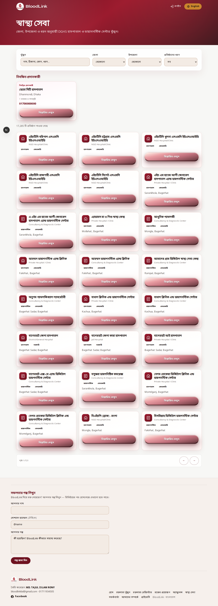
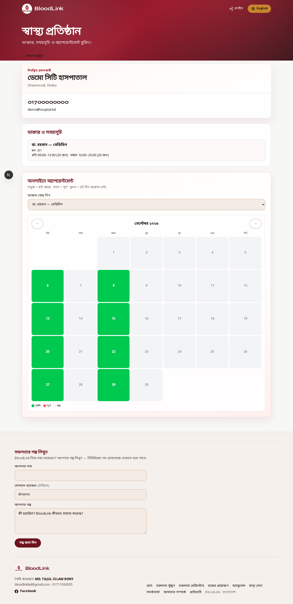
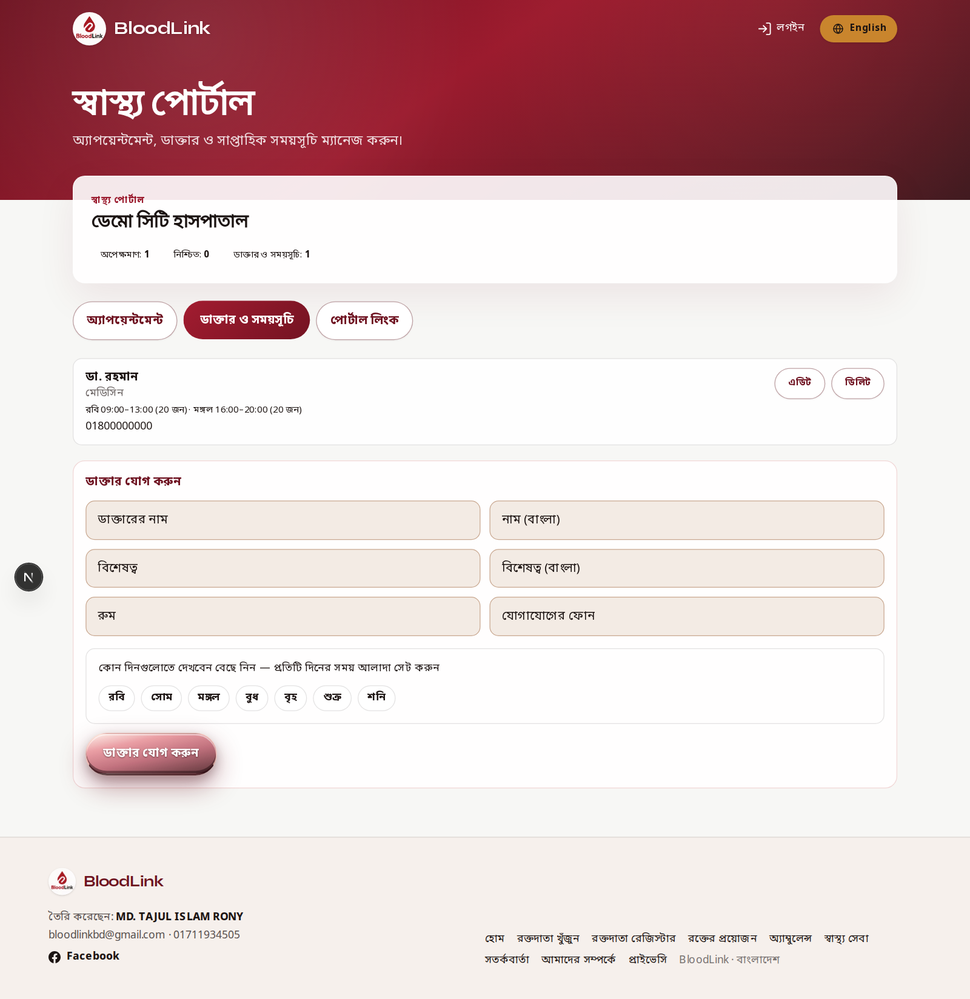
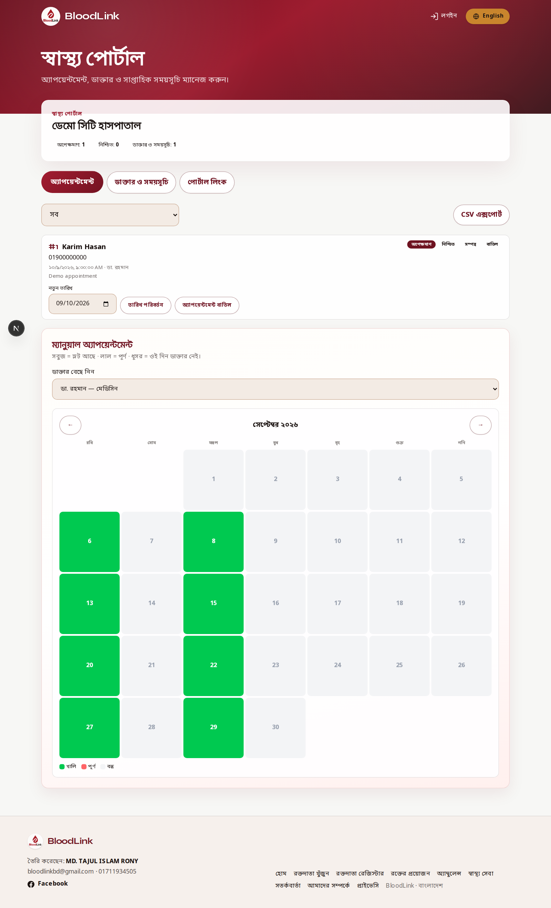

গাইড ২: স্বাস্থ্যসেবা ও হাসপাতাল কর্তৃপক্ষকে বোঝানো
ভলান্টিয়ার প্রশিক্ষণ ম্যানুয়াল — সুবিধা, স্ক্রিপ্ট ও পোর্টাল স্ক্রিনশট
এই গাইড কাকে? ভলান্টিয়ারদের জন্য — হাসপাতাল কর্তৃপক্ষকে BloodLink স্বাস্থ্যসেবায় যুক্ত হওয়ার সুবিধা ও ব্যবহার বোঝাতে।
১. স্বাস্থ্যসেবা সেকশন কী?
BloodLink-এর স্বাস্থ্য সেবা পেজে হাসপাতাল/ডায়াগনস্টিক খোঁজা যায়, ডাক্তার ও সময়সূচি দেখা যায়, এবং অনলাইনে অ্যাপয়েন্টমেন্ট বুক করা যায়। হাসপাতাল কর্তৃপক্ষ একটি প্রাইভেট পোর্টাল লিংক দিয়ে সব ম্যানেজ করে।

পাবলিক স্বাস্থ্য সেবা পেজ — এখান থেকে হাসপাতাল খোঁজা যায়
২. হাসপাতাল যুক্ত হলে কী কী সুবিধা?
সুবিধা
ব্যাখ্যা (কর্তৃপক্ষকে বলুন)
অনলাইন উপস্থিতি
রোগী জেলা/নাম দিয়ে হাসপাতাল খুঁজে পাবে
ডাক্তার সিডিউল
কোন ডাক্তার কোন দিন বসেন — ওয়েবে দেখা যাবে
অনলাইন অ্যাপয়েন্টমেন্ট
রোগী ঘরে বসে বুকিং করতে পারবে, সিরিয়াল পাবে
সহজ পোর্টাল
একটা লিংকেই ডাক্তার/অ্যাপয়েন্টমেন্ট ম্যানেজ
রক্তদাতা নেটওয়ার্ক
জরুরি রক্তে BloodLink ডোনার সাপোর্ট
৩. কর্তৃপক্ষকে বোঝানোর কথা (স্ক্রিপ্ট)
বলুন: “আলাদা অ্যাপ লাগবে না। আমরা সেটআপ করে একটা লিংক দিয়ে দিব। সেই লিংক ফোনে সেভ রাখলেই ডাক্তার ও অ্যাপয়েন্টমেন্ট ম্যানেজ করতে পারবেন। রোগীরা ওয়েবসাইট থেকে আপনাদের খুঁজে বুকিং করতে পারবে।”
WhatsApp টেক্সট (কপি করে পাঠান)
আসসালামু আলাইকুম। BloodLink BD-তে আপনাদের হাসপাতাল যুক্ত হলে রোগী অনলাইনে খুঁজে পাবে, ডাক্তার সিডিউল দেখবে ও অ্যাপয়েন্টমেন্ট বুক করতে পারবে। আপনারা একটা সহজ লিংক দিয়ে সব ম্যানেজ করবেন। জরুরি রক্তে আমাদের ডোনার নেটওয়ার্কও সাহায্য করবে। আগ্রহ থাকলে জানাবেন।
৪. পাবলিক হাসপাতাল পেজ কেমন দেখায়
রোগী এই পেজে ডাক্তার দেখে অ্যাপয়েন্টমেন্ট নিতে পারে।

হাসপাতালের পাবলিক পেজ — ডাক্তার ও বুকিং
৫. হাসপাতাল পোর্টাল — কর্তৃপক্ষ যা করবে
অ্যাডমিন যে লিংক দেবে (উদাহরণ): bloodlinkbd.org/healthcare/manage/hospital-name
হাসপাতাল ম্যানেজ পোর্টাল — প্রথম স্ক্রিন/স্ট্যাটস
A) ডাক্তার ট্যাব
ডাক্তারের নাম, বিশেষত্ব, রুম, ফোন দিন
সাপ্তাহিক দিন ও সময় সেট করুন
প্রতিদিন কতজন রোগী নেবেন লিখুন
Save করুন

ডাক্তার ম্যানেজ স্ক্রিন
B) অ্যাপয়েন্টমেন্ট ট্যাব
Pending দেখে Confirm করুন
প্রয়োজনে তারিখ বদলান / ক্যানসেল করুন
ম্যানুয়ালি অ্যাপয়েন্টমেন্ট এন্ট্রি করতে পারেন
CSV এক্সপোর্ট করে রেকর্ড রাখতে পারেন

অ্যাপয়েন্টমেন্ট ম্যানেজ স্ক্রিন
৬. ভলান্টিয়ারের রোল (২টি হাসপাতাল ম্যানেজ)
হাসপাতাল কর্তৃপক্ষকে সুবিধা বোঝানো ও রাজি করানো
অ্যাডমিনের কাছ থেকে পোর্টাল লিংক নিয়ে কর্তৃপক্ষকে দেওয়া
প্রথম সেটআপে ডাক্তার/সিডিউল এন্ট্রিতে সাহায্য
নিয়মিত চেক: সিডিউল আপডেট আছে কি না
জরুরি রক্তে হাসপাতাল ↔ ডোনার সংযোগ
কাজের প্রোগ্রেস ভলান্টিয়ার পোর্টালে নোট করা
৭. সেটআপ চেকলিস্ট (মিটিংয়ে সাথে নিন)
☐ হাসপাতালের সঠিক নাম (বাংলা/ইংরেজি)
☐ যোগাযোগের মোবাইল ও দায়িত্বপ্রাপ্ত ব্যক্তি
☐ জেলা / উপজেলা
☐ প্রথম ৩–৫ জন ডাক্তারের সিডিউল
☐ পোর্টাল লিংক ফোনে বুকমার্ক হয়েছে
☐ টেস্ট অ্যাপয়েন্টমেন্ট একটি করা হয়েছে